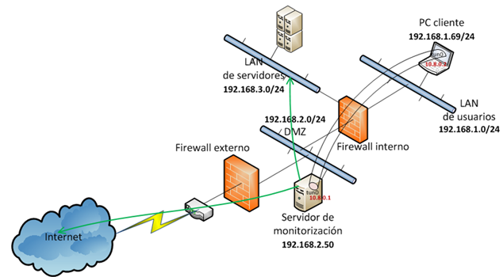
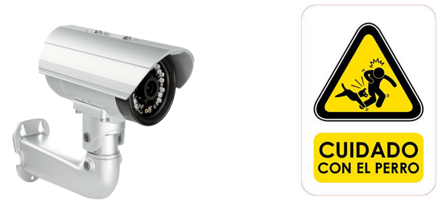

Módulo: Auditoría de Sistemas de la Información
Mecanismos de Seguridad Informática
Mecanismos Preventivos
Son aquellos cuya finalidad consiste en prevenir la ocurrencia de un ataque informático. Básicamente se concentran en el monitoreo de la información y de los bienes, registro de las actividades que se realizan en la organización y control de todos los activos y de quienes acceden a ellos.
Mecanismos Detectivos

Son aquellos que tienen como objetivo detectar todo aquello que pueda ser una amenaza para los bienes. Ejemplos de éstos son las personas y equipos de monitoreo, quienes pueden detectar cualquier intruso u anomalía en la organización.
Mecanismos Correctivos
Se encargan de reparar los errores cometidos o dañados causados una vez que se ha cometido un ataque, o en otras palabras, modifican el estado del sistema de modo que vuelva a su estado original y adecuado.
Mecanismos Disuasivos

Se encarga de desalentar a los perpetradores de que cometan sus ataques para minimizar los daños que puedan tener los bienes.
Obra publicada con Licencia Creative Commons Reconocimiento Compartir igual 4.0